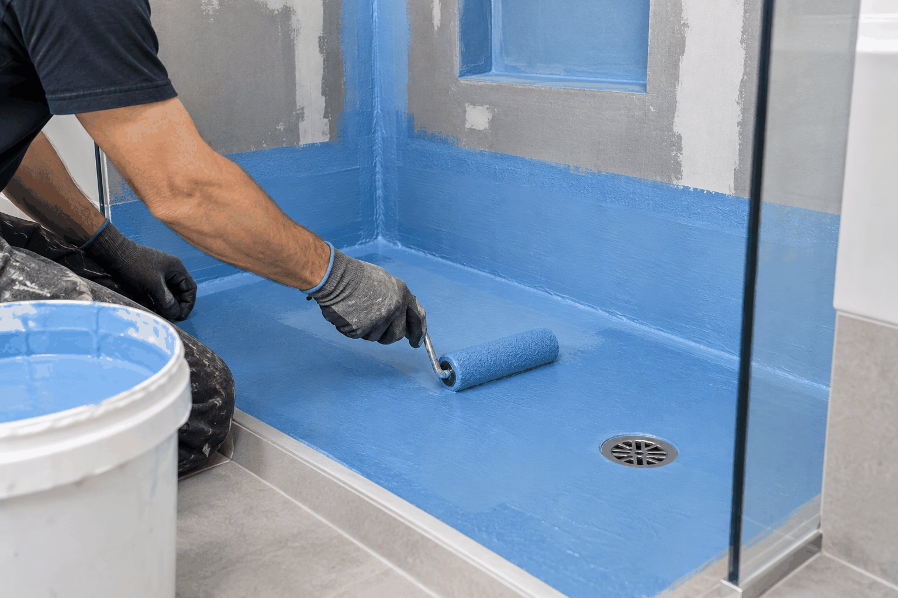

Waterproofing Adelaide
Waterproofing for Adelaide wet areas and finished surfaces.
Ellis Services Group helps Adelaide property owners prepare for waterproofing conversations before tiles and other finished surfaces are installed. Start with the space, its current project stage and the finish you are planning.

Bathroom and shower areas
Bathroom waterproofing is easiest to discuss when the layout and project stage are clear. Let us know whether the room is being renovated, stripped back, repaired or prepared for the tiled finish; identify the shower area and any other wet locations in the room. For a page focused only on this project type, read bathroom waterproofing Adelaide.
Laundry and utility areas
Laundries often combine appliances, wall junctions, floor surfaces and practical access constraints. Describe what is currently in place, whether the floor or wall finishes are being changed, and what has already happened in the renovation. A few clear photos and approximate dimensions can make an initial conversation more useful.
Roof waterproofing
For roof waterproofing, describe the roof surface, junctions or penetrations involved, the current condition and any visible water-entry concern. Photos that show the wider roof area and the detail you want to discuss help provide useful project context.
Kitchen waterproofing
For kitchen waterproofing, identify the wet area, wall or floor surface, and whether cabinetry, appliances or other finishes are already in place. This helps connect the surface preparation to the planned kitchen work.
Pool waterproofing
For pool waterproofing, include the pool-related surface or surrounding area, the current condition and the finish you are planning. Note any edges, junctions or moisture concerns that are relevant to the discussion.
External wall, edge and corner waterproofing
For external walls, edges and corners, describe the junction or exposed connection point, the condition you can see and the intended surface work. Clear photos and approximate dimensions help explain the area.
Balconies and external wet-exposed areas
For balconies and other exposed areas, start by describing the surface, edges or junctions you want to discuss, the existing condition and how the area is used. Mention visible moisture concerns, drainage-related details or planned surface changes so the condition, intended use and next steps can be discussed clearly.
Coordinate waterproofing with the final finish
Waterproofing and tiling are related stages that need to be planned together. If tile selection, a wall finish or a floor finish is part of your project, use our tiling Adelaide information to prepare those details as well. This helps keep the room, surface and intended finish connected from the first enquiry.
Prepare a waterproofing enquiry
Share your Adelaide suburb, the room or external area, the project stage, the surfaces involved and any relevant photos. You can check Adelaide service areas before getting in touch, then send an enquiry with the information you have.
Talk to Ellis Services Group
For waterproofing in Adelaide, start with the actual space and its current stage. We can then discuss the next step based on the space, surface condition and project stage.